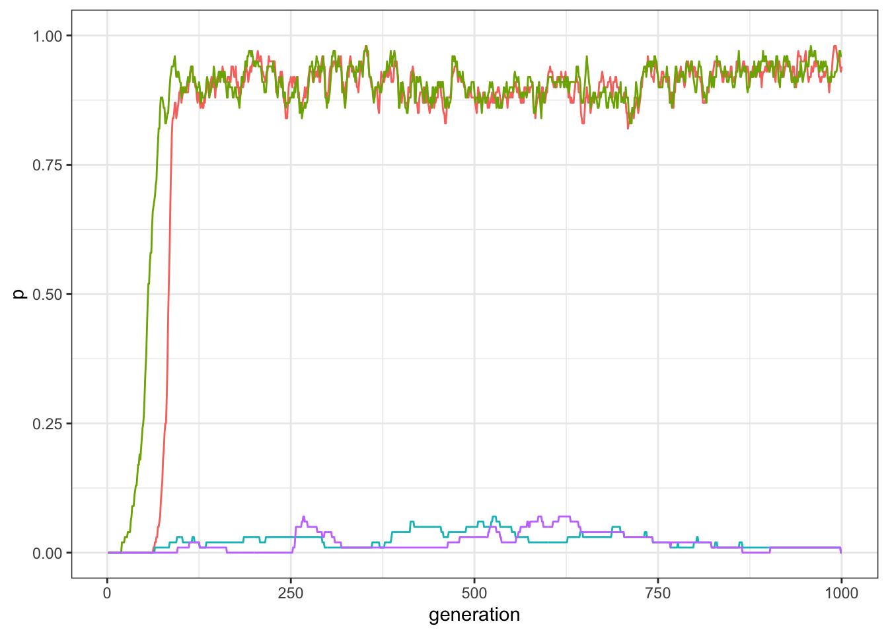
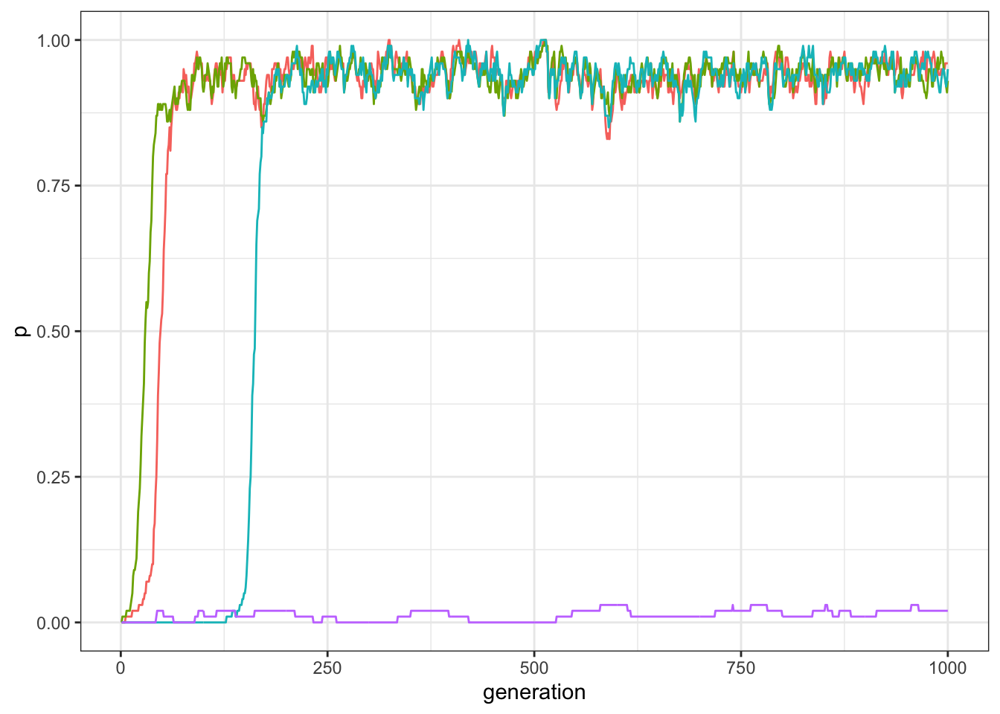
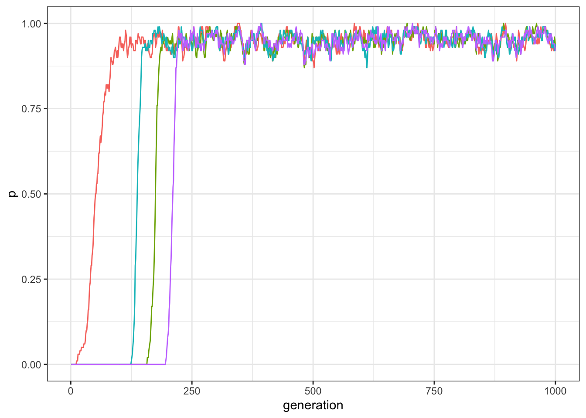
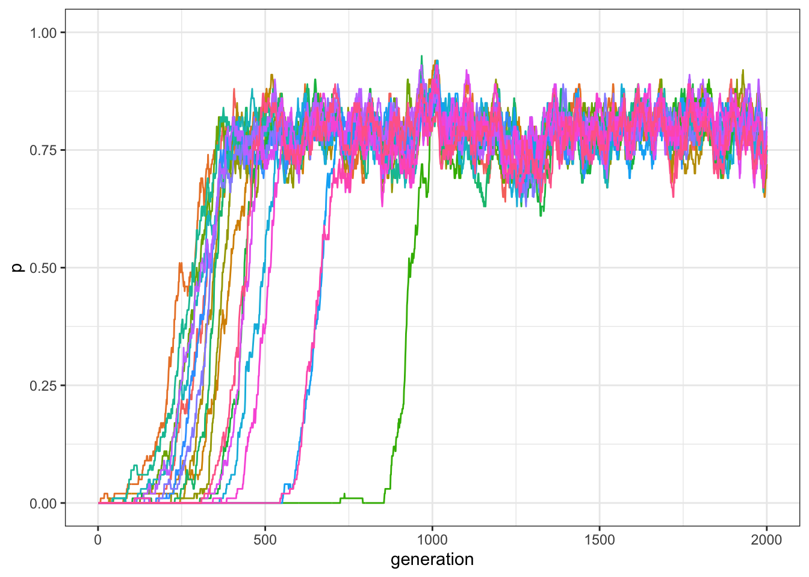

10 Traits inter-dependence
Relationships between traits are important. Examples.
Imagine a simple scenario when there are only two possible relationships between traits (compatible or incompatible), they are simmetric (if A is compatible with B, also B will be compatible with A). Each trait is compatible with itself.
| Traits | A | B | C | D |
|---|---|---|---|---|
| A | +1 | +1 | -1 | -1 |
| B | +1 | +1 | -1 | -1 |
| C | -1 | -1 | +1 | +1 |
| D | -1 | -1 | +1 | +1 |
Have a look at the world
library(tidyverse)
set.seed(111)
my_world <- matrix(c(1,1,-1,-1,1,1,-1,-1,-1,-1,1,1,-1,-1,1,1), nrow = 4, ncol = 4)
my_world## [,1] [,2] [,3] [,4]
## [1,] 1 1 -1 -1
## [2,] 1 1 -1 -1
## [3,] -1 -1 1 1
## [4,] -1 -1 1 1Function for the simulation
traits_inter_dependence <- function(N, t_max, k, mu, p_death, world){
output <- tibble(trait = as.factor(rep(1:4, each = t_max)), generation = rep(1:t_max, 4), p = rep(NA, t_max * 4))
population <- matrix(0, ncol = 4, nrow = N)
output[output$generation == 1 ,]$p <- colSums(population) / N
for(t in 2:t_max){
# innovations
innovators <- sample(c(TRUE, FALSE), N, prob = c(mu, 1 - mu), replace = TRUE)
innovations <- sample(1:4, sum(innovators), replace = TRUE)
population[cbind(which(innovators == TRUE), innovations)] <- 1
# copying
demonstrators <- sample(1:N, replace = TRUE)
demonstrators_traits <- sample(1:4, N, replace = TRUE)
for(i in 1:N){
if(population[demonstrators[i], demonstrators_traits[i]]){
compatibility_score <- sum(world[demonstrators_traits[i], which(population[i,]>0)])
copy <- (1 / (1 + exp(-k*compatibility_score))) > runif(1)
if(copy){
population[i,demonstrators_traits[i]] <- 1
}
}
}
# birth/death
replace <- sample(c(TRUE, FALSE), N, prob = c(p_death, 1 - p_death), replace = TRUE)
population[replace, ] <- 0
output[output$generation == t ,]$p <- colSums(population) / N
}
output
}Mention k, the logistic, etc.
data_model <- traits_inter_dependence(N = 100, t_max = 1000, k = 10, mu = 0.0005, p_death = 0.01, world = my_world)
plot_multiple_traits(data_model)
check that are the compatible traits
data_model[data_model$generation==1000,]## # A tibble: 4 x 3
## trait generation p
## <fct> <int> <dbl>
## 1 1 1000 0.04
## 2 2 1000 0.03
## 3 3 1000 0.91
## 4 4 1000 0.92It varies at each simulation. What happens by changing the world? (remember you can visualise the matrix)
my_world <- matrix(c(1,1,1,-1, 1,1,1,-1,1,1,1,-1,-1,-1,-1,1), nrow = 4, ncol = 4)
data_model <- traits_inter_dependence(N = 100, t_max = 1000, k = 10, mu = 0.0005, p_death = 0.01, world = my_world)
plot_multiple_traits(data_model)
All compatible:
my_world <- matrix(c(1,1,1,1,1,1,1,1,1,1,1,1,1,1,1,1), nrow = 4, ncol = 4)
data_model <- traits_inter_dependence(N = 100, t_max = 1000, k = 10, mu = 0.0005, p_death = 0.01, world = my_world)
plot_multiple_traits(data_model)
No compatiblity equates to a random copy (remember the logistic)
10.1 Many-traits model
M <- 7
gamma <- 0.5
my_world <- matrix( rep(1, M * M), nrow = M)
compatibilities <- sample(c(1, -1), choose(M,2), prob = c(gamma, 1 - gamma), replace = TRUE)
my_world[upper.tri(my_world)] <- compatibilities
my_world <- t(my_world)
my_world[upper.tri(my_world)] <- compatibilities
my_world## [,1] [,2] [,3] [,4] [,5] [,6] [,7]
## [1,] 1 -1 -1 -1 -1 1 -1
## [2,] -1 1 1 1 1 1 -1
## [3,] -1 1 1 -1 1 -1 -1
## [4,] -1 1 -1 1 1 -1 1
## [5,] -1 1 1 1 1 -1 1
## [6,] 1 1 -1 -1 -1 1 1
## [7,] -1 -1 -1 1 1 1 1traits_inter_dependence_2 <- function(N, M, t_max, k, mu, p_death, gamma){
output <- matrix(data = NA, nrow = t_max, ncol = M)
# initalise the traits' world:
world <- matrix( rep(1, M * M), nrow = M)
compatibilities <- sample(c(1, -1), choose(M,2), prob = c(gamma, 1 - gamma), replace = TRUE)
world[upper.tri(world)] <- compatibilities
world <- t(world)
world[upper.tri(world)] <- compatibilities
# initialise the population:
population <- matrix(0, ncol = M, nrow = N)
output[1, ] <- colSums(population) / N
for(t in 2:t_max){
# innovations
innovators <- sample(c(TRUE, FALSE), N, prob = c(mu, 1 - mu), replace = TRUE)
innovations <- sample(1:M, sum(innovators), replace = TRUE)
population[cbind(which(innovators == TRUE), innovations)] <- 1
# copying
demonstrators <- sample(1:N, replace = TRUE)
demonstrators_traits <- sample(1:M, N, replace = TRUE)
for(i in 1:N){
if(population[demonstrators[i], demonstrators_traits[i]]){
compatibility_score <- sum(world[demonstrators_traits[i], which(population[i,]>0)])
copy <- (1 / (1 + exp(-k*compatibility_score))) > runif(1)
if(copy){
population[i,demonstrators_traits[i]] <- 1
}
}
}
# birth/death
replace <- sample(c(TRUE, FALSE), N, prob = c(p_death, 1 - p_death), replace = TRUE)
population[replace, ] <- 0
output[t, ] <- colSums(population) / N
}
output
} data_model <- traits_inter_dependence_2(N = 100, M = 20, t_max = 2000, k = 10, mu = 0.001, p_death = 0.01, gamma = .5)
plot_multiple_traits_matrix(data_model)
data_model <- traits_inter_dependence_2(N = 100, M = 20, t_max = 2000, k = 10, mu = 0.001, p_death = 0.01, gamma = 1)
plot_multiple_traits_matrix(data_model)
r_max = 10
test_inter_dependence <- tibble(gamma = rep(seq(0, 1, by = .1), r_max), run = as.factor(rep(1:r_max, each = 11)), C = NA)
for(condition in seq(0, 1, by = .1)){
for(r in 1:r_max) {
data_model <- traits_inter_dependence_2(N = 100, M = 20, t_max = 2000, k = 10, mu = 0.001, p_death = 0.01, gamma = condition)
test_inter_dependence[test_inter_dependence$gamma == condition & test_inter_dependence$run == r, ]$C <- sum(data_model[2000,]>.5)
}
}
ggplot(data = test_inter_dependence, aes(x = gamma, y = C)) +
geom_jitter(width = 0, height = 0.5, alpha = 0.5) +
stat_summary(fun.y = mean, geom = "point", colour = "red") +
stat_summary(fun.y = mean, geom = "line", colour = "red") +
theme_bw() +
labs(x = "Average compatibility", y = "C (number of common traits)")